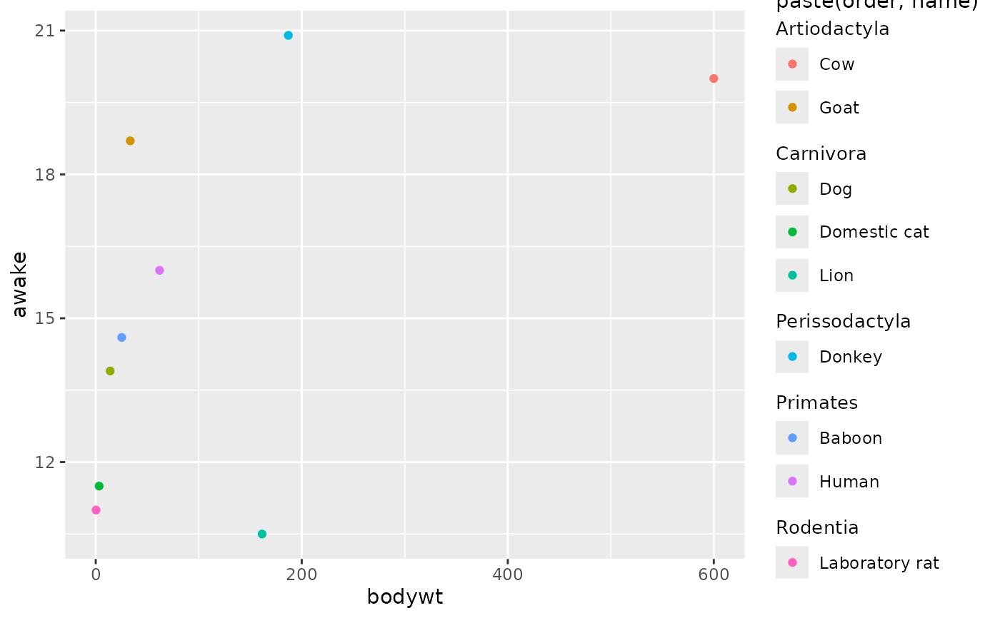
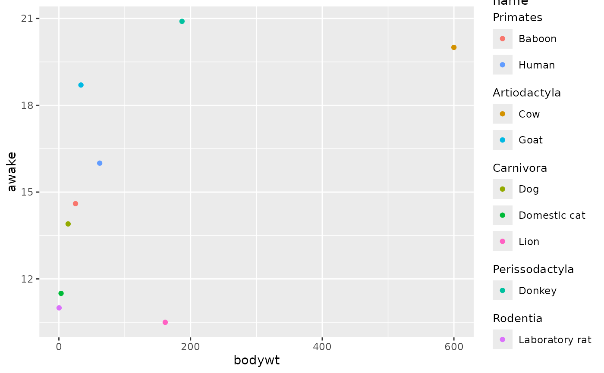
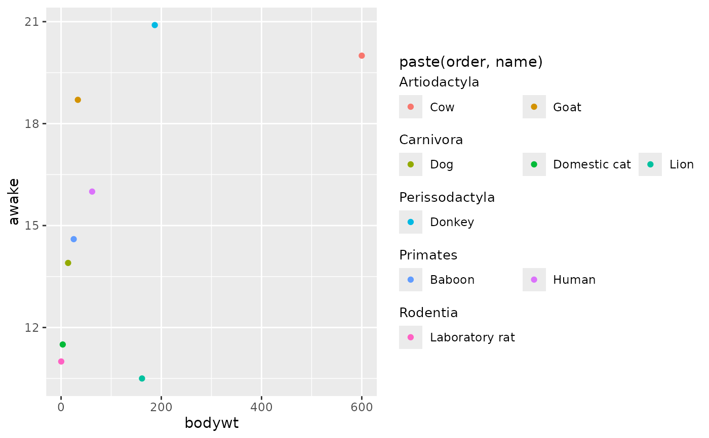
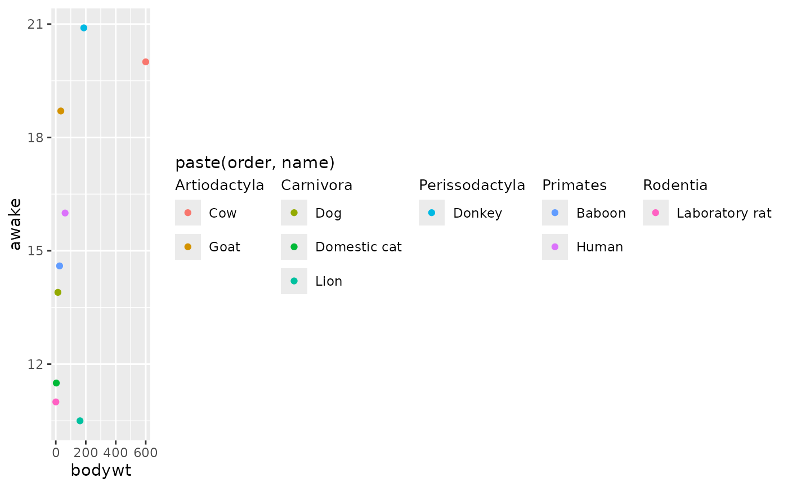
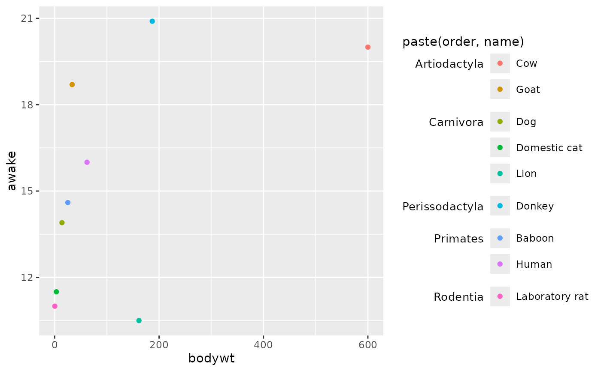
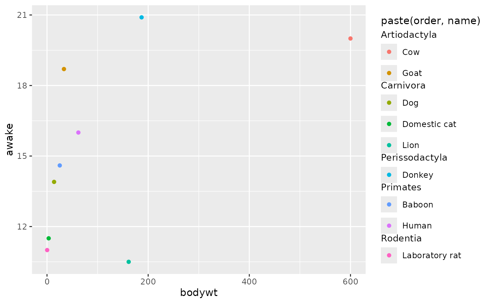

Grouped legend
guide_legend_group.RdA legend type guide similar to guide_legend()
that allows for the indication of groups.
Usage
guide_legend_group(
key = key_group_auto(),
title = waiver(),
override.aes = list(),
nrow = NULL,
ncol = NULL,
theme = NULL,
position = NULL,
direction = NULL,
order = 0
)Arguments
- key
A group key specification. Defaults to
key_group_auto()that attempts to parse groups from labels.- title
A
<character[1]>or<expression[1]>indicating the title of the guide. IfNULL, the title is not shown. The default,waiver(), takes the name of the scale object or the name specified inlabs()as the title.- override.aes
A named
<list>specifying aesthetic parameters of legend keys to override the defaults. See the examples in?guide_legend.- nrow, ncol
An
<integer[1]>setting the desired number of rows and columns of legend respectively, per group.- theme
A
<theme>object to style the guide individually or differently from the plot's theme settings. Thethemeargument in the guide overrides and is combined with the plot's theme.- position
A
<character[1]>giving the location of the guide. Can be one of"top","bottom","left"or"right".- direction
A
<character[1]>indicating the direction of the guide. Can be on of"horizontal"or"vertical".- order
A positive
<integer[1]>that specifies the order of this guide among multiple guides. This controls in which order guides are merged if there are multiple guides for the same position. If0(default), the order is determined by a hashing indicative settings of a guide.
Examples
# Standard plot for selection of `msleep`
df <- msleep[c(9, 28, 11, 5, 34, 54, 64, 24, 53), ]
p <- ggplot(df) +
aes(bodywt, awake, colour = paste(order, name)) +
geom_point()
# By default, groups are inferred from the name
p + guides(colour = "legend_group")

# You can also use a look-up table for groups
# The lookup table can be more expansive than just the data
lut <- key_group_lut(msleep$name, msleep$order)
p + aes(colour = name) +
guides(colour = guide_legend_group(key = lut))

# `nrow` and `ncol` apply within groups
p + guides(colour = guide_legend_group(nrow = 1))

# Groups are arranged according to `direction`
p + guides(colour = guide_legend_group(ncol = 1, direction = "horizontal"))

# Customising the group titles
p + guides(colour = "legend_group") +
theme(
gguidance.legend.subtitle.position = "left",
gguidance.legend.subtitle = element_text(
hjust = 1, vjust = 1, size = rel(0.9),
margin = margin(t = 5.5, r = 5.5)
)
)

# Changing the spacing between groups
p + guides(colour = "legend_group") +
theme(gguidance.legend.group.spacing = unit(1, "cm"))
